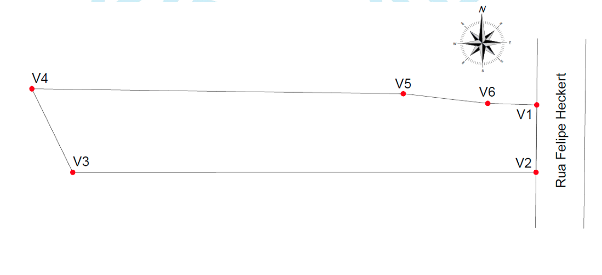

Projetos que transformam ideias em soluções.
Cada projeto representa um desafio diferente e uma solução construída em conjunto com nossos clientes. Conheça alguns dos trabalhos desenvolvidos pela Virtual e veja como unimos engenharia, arquitetura e planejamento para entregar resultados que fazem a diferença na vida de quem vai usar aquele espaço (ou aquela obra).
Escolha uma categoria para ver projetos parecidos com o seu.

O desafio: Entender o melhor aproveitamento de um terreno de 12 x 30 m para um empreendimento residencial voltado à venda ou locação.
A solução: Estudo arquitetônico para implantação de três unidades geminadas, equilibrando aproveitamento, conforto e potencial de investimento.

O desafio: Adequar uma edificação existente às exigências técnicas e legais, com oportunidade de melhorar a organização dos ambientes.
A solução: Levantamento da edificação existente e novo projeto arquitetônico com as adequações necessárias para regularização.

O desafio: Ampliar uma residência geminada existente, preservando sua estabilidade estrutural e a linguagem arquitetônica original.
A solução: Projeto arquitetônico e estrutural completo, com compatibilização entre a nova área e a edificação existente.

O desafio: Transformar uma ocupação existente em um levantamento técnico confiável, compatível com as normas cartográficas e cadastrais.
A solução: Mapa planimétrico e memorial descritivo com perímetro, confrontações, coordenadas e vértices, para instruir o processo de usucapião.
Primeiro ouvimos o cliente.
Cada solução é desenvolvida considerando aspectos técnicos, legais e funcionais.
Os projetos são compatibilizados para reduzir imprevistos.
Quando necessário, seguimos ao lado do cliente durante a execução.
Vamos entender sua necessidade e desenvolver a melhor solução para o seu imóvel.